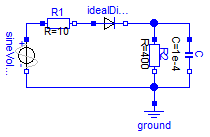
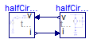

Test of an electrical circuit with one ideal diode leading to a mixed system of equations
Extends from Modelica.Icons.ExamplesPackage (Icon for packages containing runnable examples).
| Name | Description |
|---|---|
| Reference solution in pure Modelica | |
| Reference solution in pure Modelica using exactly the same structuring as in Model WithFMUs | |
| Solution with FMUs | |
| For all models in this package an FMU must be generated |
 FMITest.MixedSystems.OneDiode.Reference
FMITest.MixedSystems.OneDiode.Reference
Reference solution in pure Modelica

Extends from Modelica.Icons.Example (Icon for runnable examples).
FMITest.MixedSystems.OneDiode.WithFMUsReference
Reference solution in pure Modelica using exactly the same structuring as in Model WithFMUs

Extends from Modelica.Icons.Example (Icon for runnable examples).
FMITest.MixedSystems.OneDiode.WithFMUs
Solution with FMUs
Extends from Modelica.Icons.Example (Icon for runnable examples).